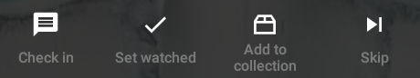

<div class="row"> 
  <div class="col-md-6">
    <h1>Help</h1>

    <div class="spacer"></div>
    
    <a href="#howto"><h2>How to</h2></a>
    <ul class="toc">
      <li><a href="#upgrade">Unlock all features</a></li>
      <li><a href="#buttons">Check in, set watched, add to collection and skip</a></li>
      <li><a href="#checkins">How check-ins work</a></li>
      <li><a href="#remove">Remove a show</a></li>
      <li><a href="#hide">Restore a hidden show</a></li>
      <li><a href="#update">Manually update shows</a></li>
      <li><a href="#backup">Backup or restore your data</a></li>
      <li><a href="#autobackup">Restore your data from an Auto-Backup</a></li>
      <li><a href="#language">Change the app language</a></li>
      <li><a href="#sync">Sync with SeriesGuide Cloud or trakt</a></li>
    </ul>
    
    <a href="#fixes"><h2>Fix an issue</h2></a>
    <ul class="toc">
      <li><a href="#translation" >Quality of translations</li>
      <li><a href="#watch">Watch shows or movies</a></li>
      <li><a href="#syncfail">Shows are not updated</a></li>
      <li><a href="#missing">Missing or incorrect information</a></li>
      <li><a href="#airtimes">Wrong air/release times</a></li>
      <li><a href="#widget">The widget displays no data or is missing</a></li>
      <li><a href="#timezone">After changing the time zone times are incorrect</a></li>
    </ul>
    
    <a href="#trakt"><h2> trakt integration</h2></a>
    <ul class="toc">
      <li><a href="#connecttrakt">Connect to trakt/Troubleshooting</a></li>
      <li><a href="#library">Add shows from your trakt library</a></li>
      <li><a href="#whatissynced">What is synced with trakt</a></li>
    </ul>
    
    <a href="#contact"><h2>Still lost?</h2></a>

    <a name="howto"></a> 
    <div class="spacer"></div>

    <a name="upgrade"></a>
    <h2>How to</h2>

    <h3>Unlock all features</h3>
    <p>Learn more about <a href="/whypay">unlocking all features</a>.</p>

    <a name="buttons"></a>
    <div class="spacer"></div>
  
    <h3>Check in, set watched, add to collection and skip</h3>
    <p>Each episode displays a button bar with four actions:</p>
    <p></img></p>
    <ul>
        <li><a href="#checkins"><b>Check in</b> via trakt</a> if you are watching right now.</li>
        <li><b>Set watched</b> if you have (just) watched this.</li>
        <li><b>Add to collection</b> if you purchased (DVD, Blu-Ray) or downloaded this.</li>
        <li><b>Skip</b> if you don't want to watch this episode right now. (Not synced with trakt!)</li>
    </ul>
    <p><span class="label label-info">Tip</span> On Android you can touch and hold most buttons to show a brief description.</p>
  
    <a name="checkins"></a>
    <div class="spacer"></div>
  
    <h3>How check-ins work</h3>
    <p>Check-in to let friends or the world know what you are watching right now. Checking in requires you to <a href="#trakt">connect SeriesGuide with trakt</a>.</p>
    <p>After the runtime of the episode or movie has passed, the episode or movie will be set watched on your trakt profile and in SeriesGuide.</p>
    
    <a name="remove"></a>
    <div class="spacer"></div>
    
    <h3>Remove a show</h3>
    <p>To remove a show:</p>
    <ol>
      <li>From the show list, touch <strong>Menu</strong>  of a show.</li>
      <li>Touch <strong>Remove</strong>.</li>
    </ol>

    <a name="hide"></a>
    <div class="spacer"></div>

    <h3>Restore a hidden show</h3>
    <p>To restore a hidden show:</p>
    <ol>
      <li>From the show list, touch the funnel-shaped icon <strong>Filter shows</strong>.</li>
      <li>Touch <strong>Remove all filters</strong>.</li>
      <li>Touch the funnel-shaped icon <strong>Filter shows</strong> again, then touch <strong>Hidden</strong>.</li>
      <li>Touch <strong>Menu</strong>  of a show, then touch <strong>Un-Hide</strong>.</li>
      <li>Touch the funnel-shaped icon <strong>Filter shows</strong> again, then touch <strong>Remove all filters</strong>.</li>
    </ol>
    
    <a name="update"></a>
    <div class="spacer"></div>	
    
    <h3>Manually update shows</h3>
    <p>Update a single show:</p>
    <ol>
       <li>From the show list, touch <strong>Menu</strong>  of a show.</li>
       <li>Select <strong>Update</strong>.</li>
    </ol>
    <p>Update all shows:</p>
    <ol>
      <li>From the show list, touch <strong>Menu</strong> .</li>
      <li>Touch <strong>Advanced</strong>.</li>
      <li>Touch <strong>Update (outdated only)</strong> or <strong>Update (all)</strong>.</li>
    </ol>
    
    <a name="backup"></a>
    <div class="spacer"></div>
  
    <h3>Backup or restore your data</h3>
    <p>To backup or restore your shows, lists and movies:</p>
    <ol>
      <li>From the show list, swipe from the left edge to open the navigation drawer.</li>
      <li>Touch <strong>Settings</strong> > <strong>Backup/Restore</strong>.</li>
      <li>Follow the instructions.</p></li>
    </ol>
    <p>On Android 4.4 (KitKat) and up you can choose where the backup files should be stored or which ones to restore from.</p>
    <p>On older versions, the backup tool will create a <strong>SeriesGuide</strong> folder inside your devices <strong>Download</strong> folder (accessible with a <a href="https://play.google.com/store/search?q=file+manager&amp;c=apps">file manager</a>; the exact path is displayed by the backup tool). There it will store your backup inside of JSON files.</p>
    <p>To restore your backup <strong>on another device</strong>, copy the <strong>SeriesGuide</strong> folder into the <strong>Download</strong> folder of that device (e.g. email yourself the files or plug into a computer via USB) and use the restore tool in SeriesGuide.</p>
    <p><span class="label label-info">Tip</span> Some users save their backup files to e.g. Dropbox/Google Drive/OneDrive.</p>

    <a name="autobackup"></a>
    <div class="spacer"></div>
  
    <h3>Restore your data from an Auto-Backup</h3>
    <p>SeriesGuide creates <strong>weekly automatic backups to the "Download/SeriesGuide/AutoBackup"</strong> folder on your device (use a <a href="https://play.google.com/store/search?q=file+manager&amp;c=apps">file manager</a> to view it). You can turn this off or choose custom backup files (Android 4.4 and up) in settings.</p>
    <p>To restore an Auto-Backup:</p>
    <ol>
      <li>From the show list, swipe from the left edge to open the navigation drawer.</li>
      <li>Touch <strong>Settings</strong> > <strong>Auto Backup</strong>.</li>
      <li>Look for the <strong>Restore Auto-Backup</strong> button to restore the last auto-backup.</li>
    </ol>
  
    <a name="language"></a>
    <div class="spacer"></div>
    
    <h3>Change the app language</h3>
    <p>If available, SeriesGuide will use <strong>the language your Android device is set to</strong>. Otherwise it will fall back to English. To change the language of your Android device look in the Android Settings app.</p>
    <p><span class="label label-info">Note</span> All translations come from amazing volunteers who translate on crowdin. Please consider <a href="https://crowdin.com/project/seriesguide-translations/invite">to translate or proof read</a> as well!</p>

    <a name="sync"></a>
    <div class="spacer"></div>

    <h3>Should I connect to SeriesGuide Cloud or trakt?</h3>
    <p>It depends on the devices and apps you use. Also keep in mind that <strong>SeriesGuide Cloud is experimental</strong> and not available for the Amazon version.</p>
    <dt>SeriesGuide Cloud</dt>
    <dd>You only use SeriesGuide on all your devices. You want to sync the favorite and hidden state of shows. You want to sync the skipped state of episodes, in addition to their watched/collected state.</dd>
    <dt>trakt</dt>
    <dd>You use other apps connected to trakt (e.g. <a href="https://trakt.tv/downloads">apps on iOS, a media center</a>) or the <a href="https://trakt.tv">trakt website</a> to access and sync your trakt library, to check in, mark episodes watched/collected or modify your movie watchlist and collection.</dd>
    <br/>
    <p>To connect to either service:</p>
    <ol>
      <li>From the show list, swipe from the left edge to open the navigation drawer.</li>
      <li>Touch <strong>Settings</strong> and look for the <strong>Services</strong> section.</li>
    </ol>
    <p><span class="label label-info">Note</span> You can be <strong>connected to SeriesGuide Cloud and trakt</strong> at the same time. Checking in, setting watched/collected, commenting, rating, etc. will still be sent to trakt. However, <strong>sync with trakt will be disabled</strong> (episode watched/collected state sync, movie watchlist and collection sync).</p>
    <p><span class="label label-info">Tip</span> <strong>You can always change your mind!</strong> First, disconnect SeriesGuide Cloud and trakt. Then, sign in again into either SeriesGuide Cloud or trakt. The shows and movies on your device will be merged with the data already existing on the service you signed into.</p>
  
    <a name="fixes"></a>
    <div class="largespacer"></div>	
    
    <a name="translation"></a></a>
    <h2>Fix an issue</h2>

    <h3>Quality of translations</h3>
    <p>If you found an error in the translation <a href="#contact">drop a message</a>.</p>
    <p>Even better, consider <a href="https://crowdin.com/project/seriesguide-translations/invite">to translate or proof read</a> on crowdin!</p>
    
    <a name="watch"></a>
    <div class="spacer"></div>
    <h3>Watch shows or movies</h3>
    <p>You can <strong>not</strong> watch shows or movies within SeriesGuide.</p>
    <p>However, <strong>below each episode</strong> or in the <strong>menu of each movie</strong> you will find <strong>links to popular services</strong> where you can (depending on your country) watch or purchase content.</p>

    <a name="syncfail"></a>
    <div class="spacer"></div> 

    <h3>Shows or episodes are not updated regularly</h3>
    <p>Make sure <strong>Turn on Auto Update</strong> is enabled in SeriesGuide settings (swipe from the left edge, touch <strong>Settings</strong> &gt; <strong>Basics</strong>) and you have a working internet connection.</p>
    <p>Make sure that <strong>Auto-sync data</strong> ("global sync") is enabled in the Android <strong>Settings</strong> app (on Android 5 and up, see <strong>Accounts</strong> &gt; <strong>Menu</strong> ; on Android 4.4 and below, see <strong>Data usage</strong> &gt; <strong>Menu</strong> ).</p>
    <p><span class="label label-info">Note</span> You can check the last time SeriesGuide did sync by looking at the SeriesGuide account in the Android <strong>Settings</strong> app (see <strong>Accounts</strong>).</p>
    <p>If all is configured correctly, try to <a href="#update">manually update</a> the show.</p>
    <p>As a last resort, remove the show and add it again.</p>
    <p><span class="label label-info">Note</span> Keep in mind that more information <a href="#missing">might not be available, yet</a> or your connection is temporarily broken (it happens, the internet is not perfect).</p>
  
    <a name="missing"></a>
    <div class="spacer"></div>    	
  
    <h3>Missing or incorrect information about shows, episodes or movies</h3>
    <p><span class="label label-info">Note</span> If search in the <strong>Add show</strong> screen (which is powered by trakt) can't find a show , it maybe is not or can't be added on trakt, yet. Check out how to <a href="http://support.trakt.tv/knowledgebase/articles/151225-how-do-i-add-a-missing-tv-show">add a missing TV show on trakt</a> for details.</p>
    <p>First of all, <a href="#syncfail">make sure Auto Update is working</a>.</p>
    <p>Otherwise, the <strong>information on TheTVDb (shows) or TMDb (movies) might be wrong or outdated</strong>. SeriesGuide gets its data from <a href="https://www.thetvdb.com">thetvdb.com</a>, an open user-maintained TV database and <a href="https://www.themoviedb.org/">themoviedb.org</a>, an open user-maintained movie database.</p>
    <p>You may <strong>consider helping those projects to add or update show and movie information</strong>. Look on their websites for further information: <a href="https://forums.thetvdb.com/viewtopic.php?f=7&amp;t=4076">Guidelines for thetvdb.com</a>, <a href="https://www.themoviedb.org/content/about">About themoviedb.org</a>.</p>
  
    <a name="airtimes"></a>
    <div class="spacer"></div>
  
    <h3>Wrong air/release times</h3>
    <p>SeriesGuide gets its data from <a href="https://www.thetvdb.com">thetvdb.com</a>, an open user-maintained TV database (see above) and <a href="https://trakt.tv">trakt</a>. The release times there are restricted to the <strong>original release</strong> in the country of origin.</p>
    <p><span class="label label-info">Tip</span> If you want local listings and listings of re-broadcasts, please look for a suitable TV guide offering in your region.</p>
    <p>If <strong>the release country is known</strong> (check a show's <a href="https://trakt.tv">trakt</a> page), SeriesGuide will assume the release time to be in a timezone of this country (e.g. Eastern Time for US shows, British Time for British shows, Central European Time for German shows, ...) and <strong>convert it to your device time zone</strong>.</p>
    <p>If <strong>the release country is not known</strong>, SeriesGuide will assume the country to be the United States of America.</p>
    <p><span class="label label-info">Info</span> If your device is <strong>set to a US mainland time zone</strong>, SeriesGuide will automatically adjust the release time (e.g. one hour earlier in Central Time).</p>
    <p>If <strong>the country displayed on trakt is not correct</strong>, please submit a request for improvement and proof of your claim (link to show website, ...) with <a href="https://support.trakt.tv">trakt support</a>.
    <p>If <strong>the country on trakt is correct</strong>, but you believe a release time is incorrectly converted in SeriesGuide, please <a href="#contact">drop a message</a>.</p>
  
    <a name="widget"></a>
    <div class="spacer"></div>
    
    <h3>The widget displays no data or is missing</h3>
    <p>You may have moved SeriesGuide to the SD card/external storage. For SeriesGuide to work properly it has to be installed on your device/internal memory. Move it back and everything should be fine again (if not, try rebooting your device).</p> 
    <p>If you are running MIUI (e.g. Xiaomi devices), make sure to allow SeriesGuide to run on start-up in your security settings and to disable managed battery usage for the app.</p>
  
    <a name="timezone"></a>
    <div class="spacer"></div>
  
    <h3>After changing the time zone, times are incorrect</h3>
    <p>Please stop SeriesGuide and restart it:</p>
    <ol>
       <li>Open the Settings app from the app drawer.</li>
       <li>Touch on <strong>Apps</strong>.</li>
       <li>Find SeriesGuide in the list of downloaded apps and tap on it.</li>
       <li>Touch <strong>Force stop</strong>.</li>
       <li>From your launcher, start SeriesGuide again.</li>
    </ol>
    <p>If that won't help, try to <a href="#update">update all shows</a>.</p>
  
    <a name="trakt"></a>
    <div class="largespacer"></div>

    <a name="connecttrakt"></a>
    <h2> trakt integration</h2>

    <h3>Connect to trakt</h3>
    <ol>
      <li>From the show list, swipe from the left edge to open the navigation drawer.</li>
      <li>Touch <strong>Settings</strong>.</li>
      <li>Touch <strong>trakt</strong> and follow the given instructions.</p></li>
    </ol>
    <p><span class="label label-info">Troubleshooting</span> If you can't connect (white screen, error message), trakt may currently be unreachable (check <a href="https://twitter.com/trakt">@trakt</a> and <a href="https://twitter.com/seriesguide">@SeriesGuide</a> for status updates). Please try again later.</p>
    <p>Try to turn off any proxy or VPN (e.g. for ad blocking). Try to clear the SeriesGuide cache (in Android Settings, in <strong>Apps</strong> find SeriesGuide, then touch <strong>Clear Cache</strong>).</p>
    <p>When using a privacy tool (e.g. a Xposed module), make sure SeriesGuide has access to the Android account system. It needs an account to store your trakt credentials and sync.</p>
    <p>If your issue persists, please <a href="#contact">contact me</a> about what is going wrong (e.g. send a screenshot).</p>

    <a name="library"></a>
    <div class="spacer"></div>
        
    <h3>Add shows from your trakt library</h3>
    <ol>
      <li>From the show list, touch .</li>
      <li>Swipe to the <strong>Library</strong> tab.</li>
      <li>Touch on the + next to a show to add it to SeriesGuide.</li>
    </ol>
    <p><span class="label label-info">Info</span> SeriesGuide will sync which episodes are already watched and collected from trakt after adding a show.</p>

    <a name="whatissynced"></a>
    <div class="spacer"></div> 
        
    <h3>What is synced with trakt</h3>
    <dl>
      <dt>Check-Ins</dt>
      <dd>Submitted immediately to trakt. On the next sync checked-in episodes (via SeriesGuide or trakt) are marked as watched within SeriesGuide on all your devices.</dd>
      <br/>
      <dt>Episode watched and collected flags</dt>
      <dt>Movie watchlist and collection</dt>
      <dd>Changes in SeriesGuide are sent immediately to trakt. Changes on trakt (e.g. by SeriesGuide on your other devices) will appear on the next sync.</dd>
    </dl>
  
    <a name="contact"></a>
    <div class="largespacer"></div>
  
    <h2>Drop a message!</h2>
    <p>Tweet <a href="https://twitter.com/seriesguide">@SeriesGuide</a>, post to the <a href="https://plus.google.com/communities/103447253937737054097">SeriesGuide Community <span class="glyphicon glyphicon-new-window"></span></a> or <a href="mailto:uwe@seriesgui.de">email me</a>.</p>

  </div> <!-- span -->
</div> <!-- row -->
